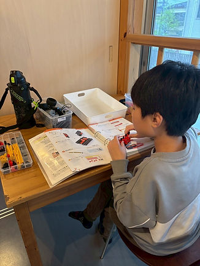

AFTER SCHOOL DAY SERVICE
放課後等デイサービスair 習志野台校
学校や家庭とは少し違う、安心して過ごせる第三の居場所。放課後や休日の時間を通して、一人ひとりの「できた」を増やしていきます。

SUPPORT
一人ひとりのペースに合わせた支援。
放課後等デイサービスは、障がいや発達に特性のある就学児童が、放課後や休日に利用できる福祉サービスです。
airでは、安心して過ごせる環境を土台に、学習・遊び・創作・生活体験を組み合わせながら、子どもたちの成長を支えます。
01
安心できる居場所
学校後の疲れや緊張を受け止めながら、心とからだを落ち着けて過ごせる時間を大切にします。
02
できたを増やす活動
宿題、個別課題、創作、調理、外出などを通して、小さな成功体験を積み重ねます。
03
人との関わりを育てる
遊びや会話の中で、気持ちの伝え方や順番を待つ経験などを無理なく練習します。
5 AREAS
5領域を土台にした日々の支援。
健康・生活、運動・感覚、認知・行動、言語・コミュニケーション、人間関係・社会性を意識しながら、一人ひとりに合った関わりを考えます。
FACILITY
施設情報
air 習志野台校
- サービス
- 放課後等デイサービス
- 住所
- 〒274-0063 千葉県船橋市習志野台8-25-7-201
- 営業時間
- 月曜～金曜 10:00～19:00
Google Maps APIキーを設定すると、ここに地図が表示されます。